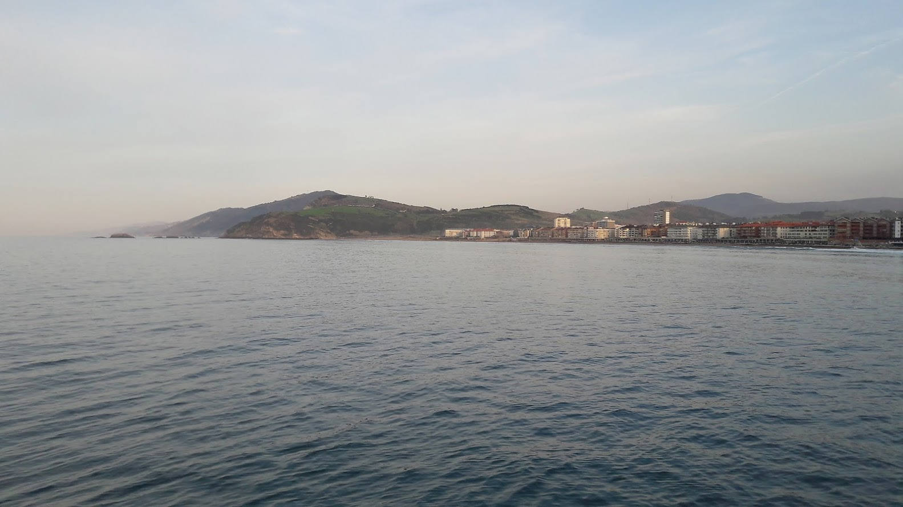

Ibilbidea
Ikastola - Asti - Kanala - Itegi - Musika Plaza - Ikastola
Aldapa gutxi duen ibilbide bat proposatzen dizuegu, denek egiteko modukoa, punturik altuenak 12 metro besterik ez ditu eta. Asti aldera egingo dugu lehenbizi, inguruko belardietatik eta ondoren itsasaldera, kostara, ia Getariako mugetaraino, errepide ondoan dagoen oinezkoen bidetik.
 1. arg.
1. arg.
Irteera Maria Etxetxiki kalean, Salbatore Mitxelena ikastolaren aurrean (1. arg.). Trenbide azpitik pasatu, eta suhiltzaileen etxeraino joan. Espaloitik ekingo diogu Itxasmendi auzoraino, eta Orokieta ikastetxe aurrean zebrabidea igaro. Ezkerretara hartu, eta espaloia utzi gabe autopista azpitik doan tunela pasako dugu. Zuzen jarraitu, eta bidegurutzean ezkerretara joan (2. arg.)
Maria Eizagirre “Maria Etxetxiki” Zarautzen jaio zen 1886. urtean Añurbe baserrian, eta Etxetxiki baserrira ezkondu.
Zarautzen kale horrek bakarrik du emakume baten izena. 11 seme-alaba izan zituen. 21 urterekin hasi zen emagin-lanetan, eta bizitza guztia eman zuen lan horretan. Baina ez hori bakarrik: 11 seme-alaben arduraz gain, besteak beste, injekzioak jartzen zituen, hilzorian zeudenak zaindu, San Pelaioko ermita zaindu eta etxeko baratzean jarduten zuen.
«Iñurritza» eta «Abendats» ezizenez ezaguna, Zarautzen jaio zen 1919an, eta euskal olerkaria izan zen. Apaiz frantziskotarra zela, Frankismo garaian Espainiako Eliza ofizialak jarraitzen zuen ildoarekin ados ez zegoenez eta hizkuntzaren eta hiztunen egoera itota ikusten zuenez, bere burua misioetara erbesteratzea erabaki zuen.
Mitxelenaren idazlanak euskararekiko eta Euskal Herriarekiko samin arduraz beterik daude eta bere olerkigintza bertsogintza tradizionaletik oso hurbil dago.
Bide honek Astiko Kirol Gunera eramango gaitu autopistaren paretik. Zati honek baditu pare bat aldapatxo, ibilbideko desnibelik handiena, baina erraz gainditzen dira (3. arg.). Bidegurutzera iristean ezkerretara hartu, Astiko Kirol Gunera iritsi arte. (4. arg.).
3. arg. 4. arg.Kirol Gunera iristean ezkerretara, autopista azpitik igaroaz, bidegorria hasten da (5. arg.). 500 bat metrotara eskuin aldera Sakeletxeko lezkadi zoragarria dago (6. arg.), hegazti eta landare berezien bizilekua.
Asti errekaren bailara da gaur Astialdea deritzona. Kirolgunerantz joanik, eskuinera Sakeletxeko lezkadi zoragarria dago. Eskuinera baratzeak daude errekaren alde batean eta bestaldean berriro lezkadiak. Proiektua da Asti errekaren albo bietan lezkadia berreskuratzea eta Iritarekin lotura fisikoa areagotzekoa, gaurko biotopoa, Irita eta Asti KBE (Kontserbazio Bereziko Eremua) berean sartzeko eta beren balio naturalistikoak batera babesteko.
Autopistara doan errotondora iristean aldapa behera egin ordez, zebrabidetik errepidea igaro (7. arg.) eta ezkerretara egin. Laster, hurrengo zebrabidean, trenbide azpian, errepidea igaro berriro (8. arg.) eta espaloitik eskuin aldera egin.
7. arg. 8. arg.
8. arg.
Hemendik Iñurritzako zelaira iritsiko gara eta honen bukaeran zebrabidea aurkituko dugu. Bertatik igaro (9. arg.) eta aurrez aurrez aurkituko dugun bidetik, N-634 errepiderantz jo (10. arg.). Hau semaforotik gurutzatu eta eskuinera hartu.
 9. arg.
9. arg.
 10. arg.
10. arg.
Espaloitik goazela Zubi Ondo jatetxetik doan errepidea hartu, kanpin ondotik pasatu eta Iñurritza biotopoan sartuko gara (11. arg.). Araztegira iristean, itsasorantz doan bidexka hartuko dugu eta bertatik joango gara estuarioa ikusiaz (12. arg) hondartzara iritsi arte.
11. arg."Estuarioak (inguruko herrietan errio deituak) itsasoa ibaian barna sartzen den lekuak dira, alegia, ibaiaren bokalean, marearen eta olatuaren eraginez itsasoko ur gazia ibaiko ur gezarekin nahasten den eremu zabalak. Itsasoa eta ibaia, biak ala biak ekosistema indartsu eta dinamikoak dira, eta ondorioz, elkar topatzen direneko eremu hauek aldakorrak eta biziak dira ezinbestean" (Iñurritzako hegaztiak liburua).
Iñurritzako estuarioan hegazti migratzaileek egiten duten egonaldian elikatu eta atseden hartzen dute. Azken bost urtetan ia 200 hegazti-espezie ikusi eta identifikatu dira bertan. Hegaztiaz gainera, aberatsa da paduretako landare-espezieetan, 24 espezie daude, haietatik 13 galtzeko arriskuan daudenak. Euskal Herrian hemen bakarrik daudenak: bi espezie daude eta Gipuzkoan hemen bakarrik daudenak: beste bi.
Hondartzara iristean (Kanala zarauztarrentzat) hondartzako dunen gainetik doan egurrezko pasarela hartuko dugu (13. arg.). Hau bukatzean, kostaldeko malekoiarekin egingo dugu topo. Bertatik joango gara, eta hondartza guztia igaroko dugu Getariara doan N-634 errepidera iritsi arte (14. arg.).
Egurrezko pasarelaren itsas aldean duna primarioko landareak ugaltzen ari direla ikus daitezke, 2014ko itsasaldiek egindako kalteak bere onera etortzen ari baitira.
Pasarelaren barne aldera Euskal Herriko duna-multzorik handiena aurkitzen da, azken 100 urtetan golf bihurtuta. Biotoporen barnean egonik, Arkamurka Elkarteak bateraezina jotzen du golf-jarduera kontserbazioarekin. Itsas aldeko duna aurreak ere presio handia jasaten du udan.
Zarauzko dunetan dunetako 47 landare-espezie aurkitzen dira, batzuk Euskal Herrian hemen bakarrik aurkitzen direnak. Euskal Herrian mehatxupean dauden 17 landareetatik 10 hemen daude.
Golf barneko dunetan batez ere hegazti limikolak pausatzen dira, kurlintak, atseden hartu eta jateko.
Getariaraino doan paseo zoragarritik joango gara Itegiraino (2. tunela) (15. arg.). Bidean pasako ditugu herriko portua (moila) (16. arg), Alle punta (1. tunela) (17. arg.) eta Arroka zabala. Bista zoragarriak itsas aldera daudenak.
15. arg. 16. arg. 17. arg.Itegira iritsi eta Getariako arratoia ikusi eta gero, bide beretik itzuliko gara. Malekoitik joan ordez, baina, Narrosko Jauregiaren ondotik doan espaloitik joango gara (18. arg.), eta Narros bukaeran ezkerrera hartu, eta Munoa plazara gerturatuko gara (19. arg.)
18. arg. 19. arg.Munoa plazatik Musika Plazara joango gara. Bertan, deskantsu hartzeko aukera izango dugu, eta ondoren Kale Nagusitik (20. arg.) egingo dugu, San Frantzisko kaleraino.
20. arg.San Frantzisko kalera iristean eskuinera hartu, eta, ondoren, lehenbiziko bidegurutzean, ezkerretara, Zigordia kalera (21. arg.). Hemendik tren-geltokiraino joan, eta ondoren aurrera jarraitu, Ikastolaraino. Ez du galbiderik.
21. arg.